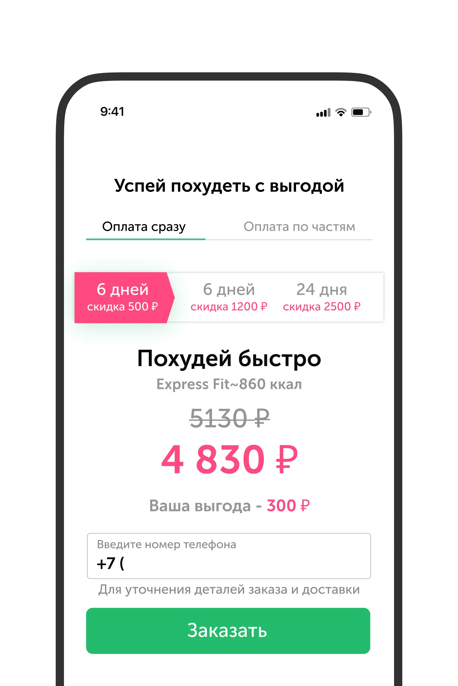

Grow Food. Редизайн основной воронки для увеличения конверсии в заказ рациона
Переработка ключевого пользовательского пути в приложении доставки еды. Фокус на снижении отказов и росте конверсии в первый заказ.

Провести аудит интерфейса и предложить решения для ключевых конверсионных блоков
UX-анализ и проверка гипотезы пошагового оформления
Нашёл четыре проблемы: нет визуала еды на этапе оплаты, перегруженная форма, скрытые слоты доставки, лишнее поле «держатель карты». Вместе с командой сформулировали гипотезу: разделение оформления на несколько шагов увеличит сквозную конверсию. Запустили A/B-тест — пошаговый вариант показал себя хуже. Отказались от него и сфокусировались на точечной оптимизации единой страницы.

Редизайн единой страницы чек-аута
Добавил фото еды и ключевые выгоды — вернул эмоцию на этап оплаты. Вывел слоты доставки из селекта — при смене даты время обновляется на виду. Встроил ввод реквизитов прямо на страницу, убрал необязательное поле. Добавил саммари по адресу и времени для проверки перед оплатой.


Новый выбор тарифа
Провёл коридорные тесты на выборе тарифа — выяснил, что новые пользователи выбирали 6 дней, хотя и клиентам, и сервису выгоднее от 12. Проверил три гипотезы: цена в день на контроле, переименование в «подписку», перенос поля телефона на чек-аут.


Новый сегмент — новый UI выбора рациона
При масштабировании пришли люди, которые просто хотят готовую еду в офис. Старый UI не справлялся: скроллить «туда-сюда» чтобы сравнить рационы невозможно. Переработал блок выбора для быстрого сравнения линеек. На вебвизорах зафиксировал рост глубины просмотра.